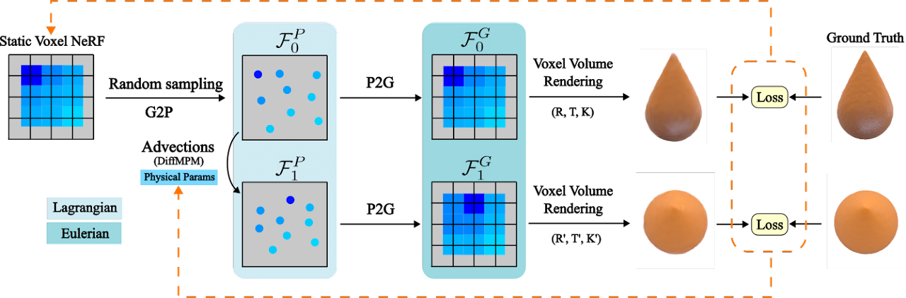

PAC-NeRF (Physics Augmented Continuum Neural Radiance Fields) is a novel approach to estimating both the unknown geometry and physical parameters of highly dynamic objects from multi-view videos.
We design PAC-NeRF to only ever produce physically plausible states by enforcing the neural radiance field to follow the conservation laws of continuum mechanics.
For this, we design a hybrid Eulerian-Lagrangian representation of the neural radiance field, i.e., we use the Eulerian grid representation for NeRF density and color fields,
while advecting the neural radiance fields via Lagrangian particles. This hybrid Eulerian-Lagrangian representation seamlessly blends efficient neural rendering with the material point method (MPM) for robust differentiable physics simulation.

Effect propagation requires multistep message passing along the directed edges in graph G.
Forces ejected from ball A (Fig. 2) should be propagated
through the connected balls to ball B within a single time
step. Force propagation is hard to analyze analytically for
complex scenes. Therefore, we let PropNet learn to decide
whether an effect should be propagated further or withheld.
Effect propagation requires multistep message passing along the directed edges in graph G.
Forces ejected from ball A (Fig. 2) should be propagated
through the connected balls to ball B within a single time
step. Force propagation is hard to analyze analytically for
complex scenes. Therefore, we let PropNet learn to decide
whether an effect should be propagated further or withheld.
At time t, we denote the propagating effect from relation
k at propagation step l as el
k,t, and the propagating effect
from object i as hl
i,t. Here, we have 1 ≤ l ≤ L, where L
is the maximum propagation steps within each step of the
simulation. Propagation can be described as
At time t, we denote the propagating effect from relation
k at propagation step l as el
k,t, and the propagating effect
from object i as hl
i,t. Here, we have 1 ≤ l ≤ L, where L
is the maximum propagation steps within each step of the
simulation. Propagation can be described as